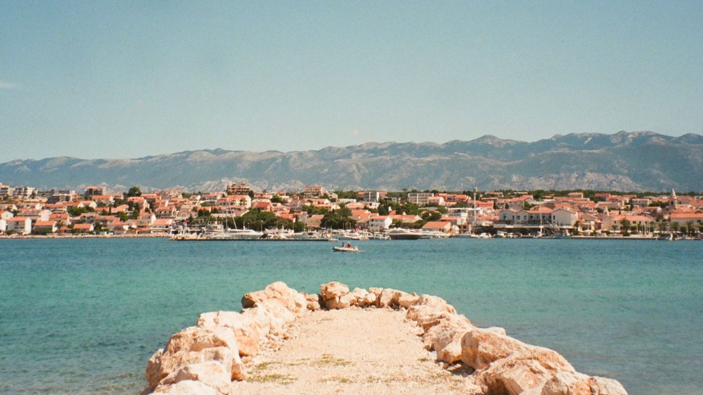

I'm a writer, creator, and marketer just trying to do great work.

My Work
About
[PLACEHOLDER BIO] I'm a copywriter who believes the difference between "fine" and "unforgettable" is usually about four words and the willingness to delete twelve.
[PLACEHOLDER] Two or three sentences on where you've worked, what kinds of brands you like, and the sort of problems you're best at solving. Keep it human. Keep it short.
[PLACEHOLDER] One sentence on what you're looking for right now — full-time role, freelance, or both — so the person reading knows exactly what to do next.
- Based in
- [PLACEHOLDER — City]
- Looking for
- Full-time roles & select freelance
- Writes
- Brand, campaign, email, product, long-form
- Also does
- Strategy, naming, tone-of-voice systems
Contact
Got a brief, a role, or a sentence that isn't working? Send it over. I reply faster than most people expect and more thoroughly than most people want.